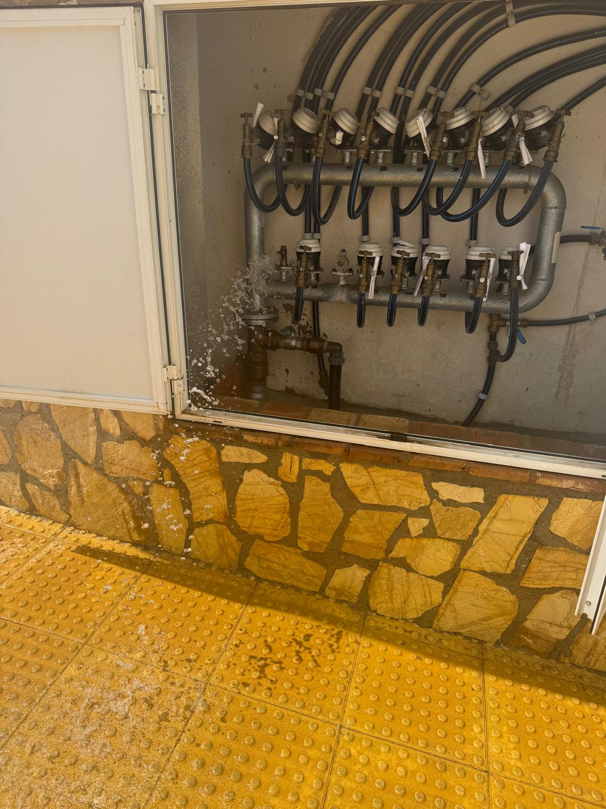
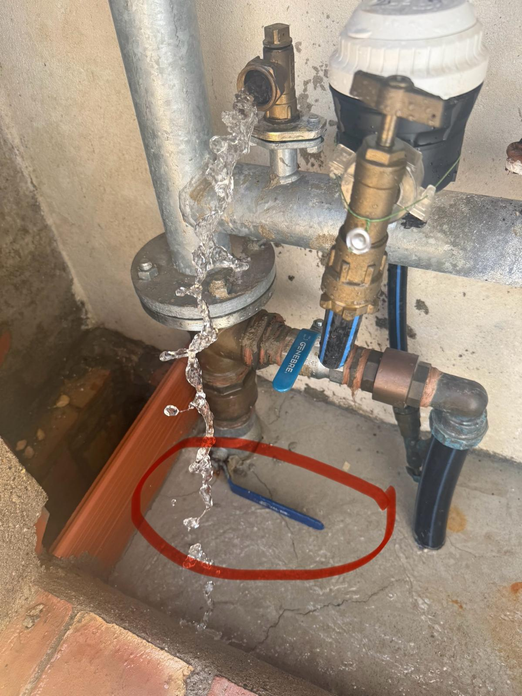
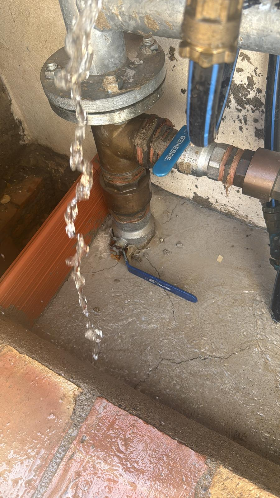
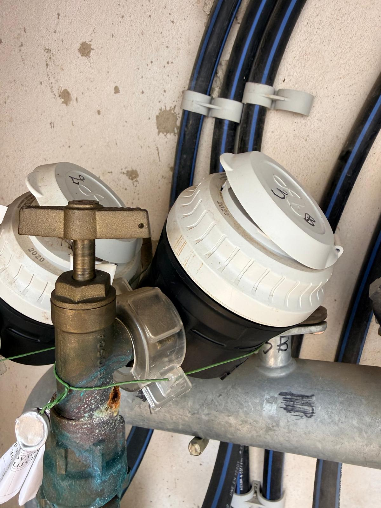
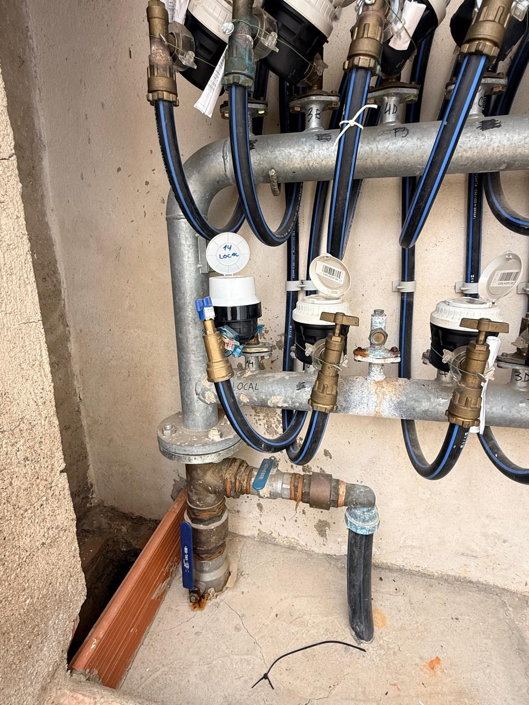
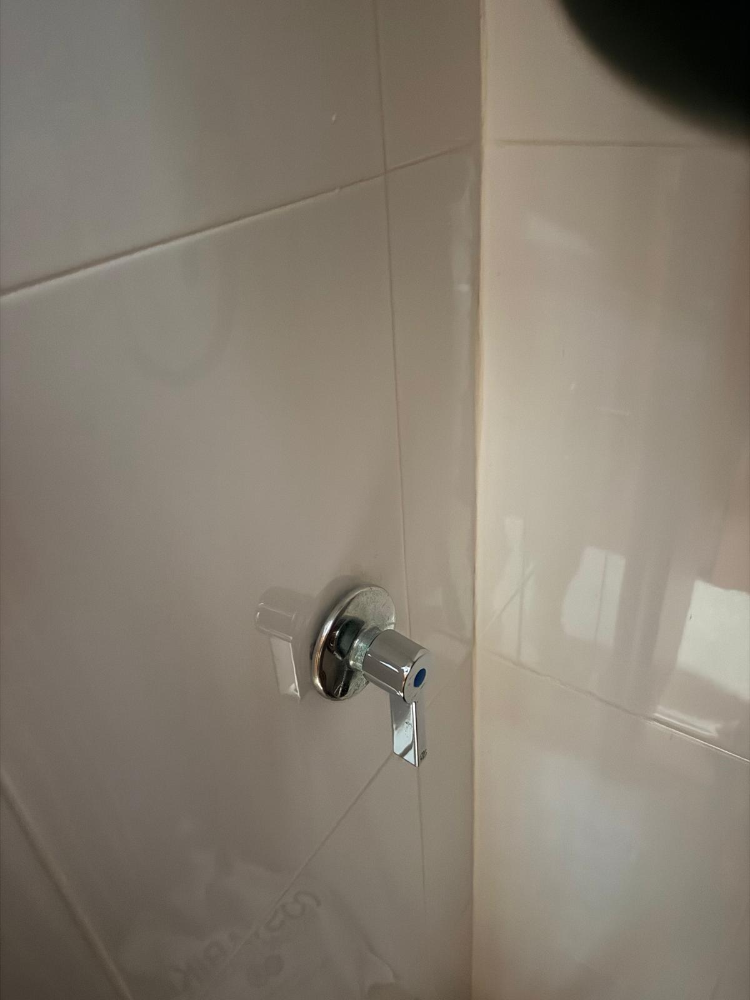
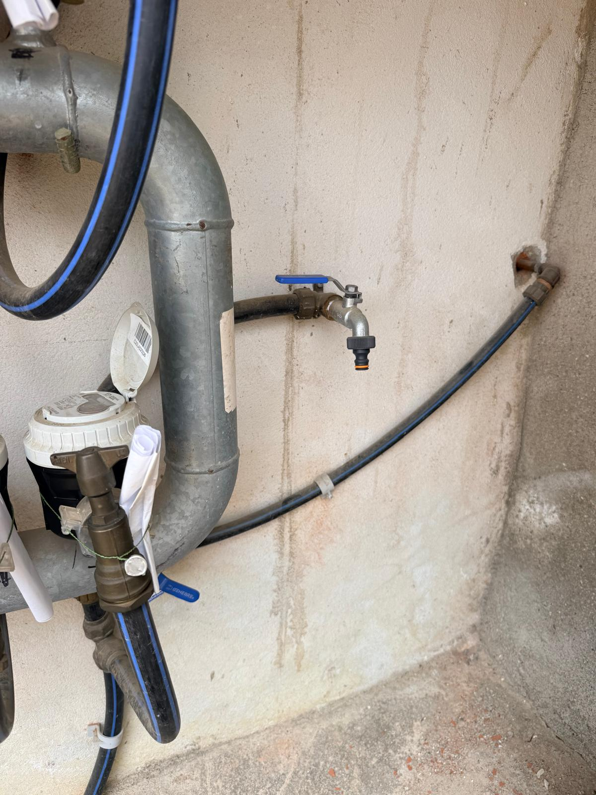

Water Supply & Emergency Guide
Essential details regarding utility providers, infrastructure specifications, emergency shut-off protocols, and electric boiler protection.
1. Utility Provider & Emergency Contacts
Key contacts for water supply management, infrastructure faults, and local plumbing assistance in Palomares.
- Company: GALASA (Gestión de Aguas del Levante Almeriense SA)
- Local Office: Carretera Nacional 340, Km 533, 04620 Vera (Polígono Industrial Vera, 1) (Almería)
- Emergency & Support: +34 950 91 67 38 / +34 950 39 12 00
- Official Website: www.galasa.es
- Supply Interruptions: www.galasa.es/interrupciones-suministro
Local Plumbing Support
- Emergency / Repairs: +34 666 70 19 80 (WhatsApp available in Spanish or English)
- Availability: Closed on weekends
2. Infrastructure Specifications & Metering
- Main Water Cabinet: Located outdoors at the underground garage entrance, left-side housing cabinet.
- Main Shut-off Valve: The primary blue handle located at the bottom-left inside the main entrance cabinet.
- Meter Configuration: 15 analogue mechanical meters in total (13 for individual apartments labelled 1A to 4D, 1 for common areas labelled '14 LOCAL', and 1 unlabelled for the swimming pool).
- Meter Readings: All meters are analogue with no remote telemetry. A Galasa technician physically inspects the cabinet on-site prior to billing cycles.
- Pressure System: Main pressure regulation assembly installed adjacent to the meter cluster.
- Outdoor Taps: The 7 outdoor taps across the complex are strictly reserved for common area maintenance and gardening. Private use is prohibited.
3. Emergency Leak Isolation Protocols
If a leak is detected, locate the specific zone below and execute the corresponding isolation steps immediately:
A) Leak INSIDE an Apartment
First, shut off the internal stopcock located directly inside the property (typically inside the boiler cupboard; see Photo 6). If that valve is inaccessible or fails to stem the flow, go to the main entrance cabinet (Photo 1), unlock it using the key safe, and close your apartment's designated individual stopcock labelled 1A to 4D (Photo 4).
B) Leak INSIDE Common Building Areas
Access the main water cabinet at the entrance using the key safe. Locate and close the stopcock labelled '14 LOCAL' to isolate the common area supply (Photo 5).
Note: For pool-related leaks, close the unlabelled pool supply valve situated at the bottom right of the cabinet (Photo 7).
C) Major General Building Leak
To isolate the entire building during a catastrophic main line failure, unlock the main water cabinet at the entrance (Photo 2) and completely close the primary blue shut-off valve located at the bottom-left (highlighted in Photo 2 and detailed in Photo 3).
D) Leak OUTSIDE the Building Perimeter
Never attempt to operate valves on public streets or pavements. Immediately report external infrastructure bursts to the Galasa emergency line on +34 950 39 12 00 and inform building management.
4. Main Water Shutdowns & Boiler Protection
Due to ageing infrastructure in Palomares, temporary water service interruptions occur periodically (lasting between 1 and 12 hours). Check active notices at www.galasa.es/interrupciones-suministro.
- Never draw hot water during an outage: Attempting to use hot water while the mains supply is cut drains the water tank, exposing heating elements to dry-firing and severe thermal damage.
- Preemptive Isolation: Always switch off or unplug your electric boiler at the consumer unit as soon as a water cut is noticed.
- Thermal Cut-out Reset: If your boiler fails to heat after service is restored but shows no physical leaks, do not replace the unit. In most cases, the internal thermal safety switch has tripped. A manual red reset button is positioned behind the lower cover plate.
- 230V Electrical Hazard: The thermal reset button sits adjacent to live electrical terminals. Never remove the protective cover yourself. Contact our certified local plumber via WhatsApp at +34 666 70 19 80.
Visual Component Reference

Photo 1: Main Water Cabinet Location (Underground garage entrance, left-side exterior wall).

Photo 2: Primary Valve System: Interior view of the main entrance utility cabinet.

Photo 3: Main Blue Valve: Primary shut-off lever designated for general building leaks.

Photo 4: Individual Meters & Stopcocks: Labelled clearly for apartments 1A through 4D.

Photo 5: Common Area Supply: Meter and stopcock assembly labelled '14 LOCAL'.

Photo 6: Internal Stopcock: Individual apartment isolation valve located inside the boiler cupboard.

Photo 7: Swimming Pool Supply: Unlabelled pool control valve situated at the bottom-right.